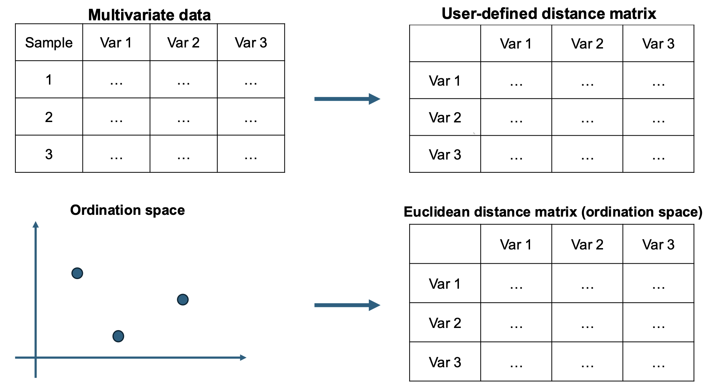
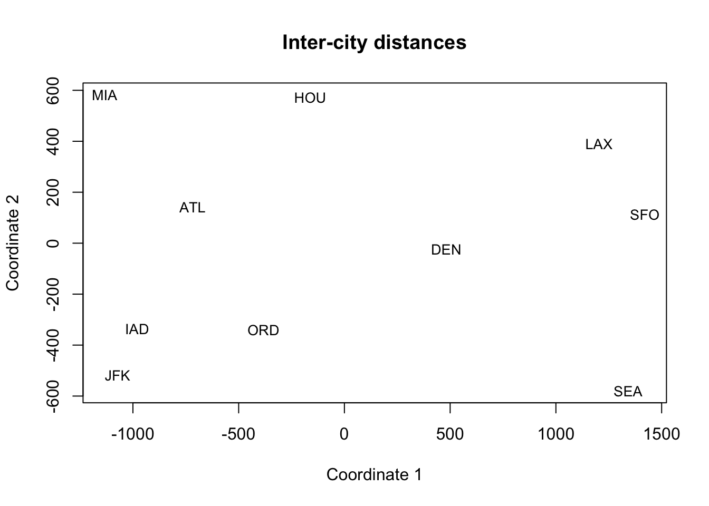
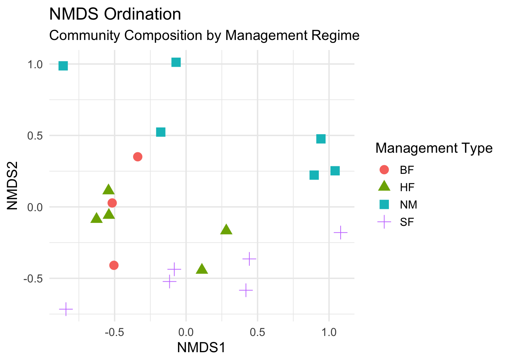
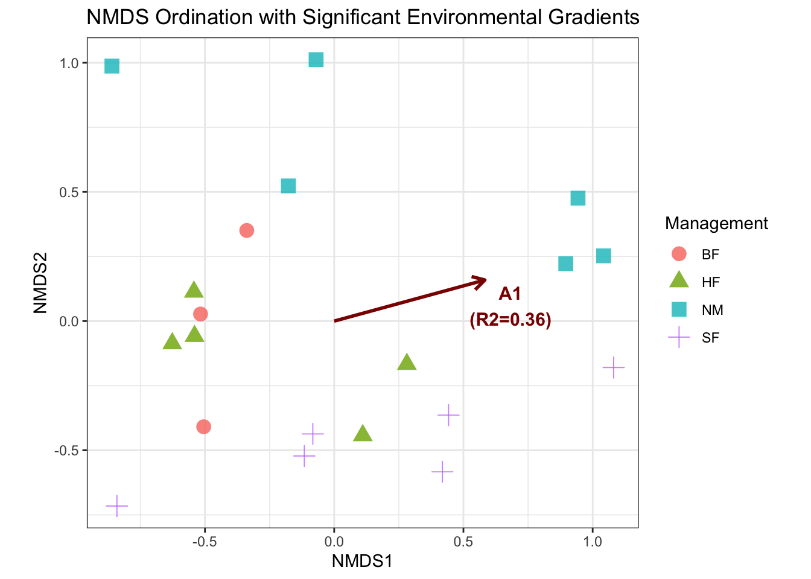
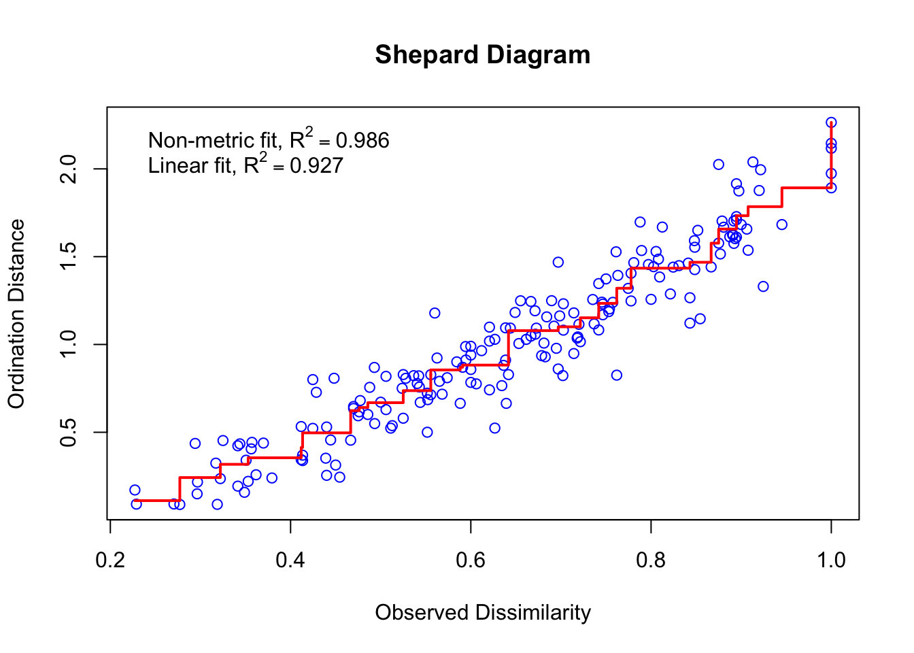

# Motivating Example: Airline Distances
## Corrected airline distances (ATL–SEA = 2180)
cities <- c("ATL","ORD","DEN","HOU","LAX","MIA","JFK","SFO","SEA","IAD")
D <- matrix(c(
0,587,1212,701,1936,604,748,2139,2180,543,
587,0,920,940,1745,1188,713,1858,1737,597,
1212,929,0,879,831,1726,1631,949,1021,1494,
701,940,879,0,1374,968,1420,1645,1891,1220,
1936,1745,831,1374,0,2339,2451,347,959,2300,
604,1188,1726,968,2339,0,1092,2594,2734,923,
748,713,1631,1420,2451,1092,0,2571,2408,205,
2139,1858,949,1645,347,2594,2571,0,678,2442,
2180,1737,1021,1891,959,2734,2408,678,0,2329,
543,597,1494,1220,2300,923,205,2442,2329,0
), nrow=10, byrow=TRUE, dimnames=list(cities, cities))8 Multidimensional Scaling
8.1 Introduction
The goal of MDS: producing a low-dimensional configuration (spatial map) that preserves proximities (similarities/dissimilarities) in original data
MDS is widely used for various applications in psychology, marketing research, ecology and biology, social science, and visualization.
8.2 Motivation
We often observe a proximity (similarity or dissimilarity) between pairs of items and want a geometric picture. Examples include:
- Distances along networks (e.g., airline route mileage),
- Sensory judgments among products,
- Voting similarity/dissimilarity among legislators.

Interpretation: The 2D configuration arranges cities roughly like the U.S. map: West Coast (SFO, LAX, SEA) on one side, East Coast (JFK, IAD, MIA) on the other, with DEN/ORD more central and HOU/ATL in the south. That’s the intuitive power of MDS: a big, unreadable distance table becomes a meaningful picture.
Note: While the cities are roughly configured like the U.S. map, the exact geometry is still distorted.
8.3 Multidimensional Scaling (MDS)
8.3.1 Basic idea
MDS is a collection of different algorithms, designed to arrive at optimal low-dimensional (usually 2 or 3 dimensions) representation of the data, whose inter-point distances (or dissimilarities) are as close as possible to that in the original space. The figure below illustrates the core idea of MDS. 
Given a n\times p data matrix {Y}=[\mathbf{y}_1, \mathbf{y}_2, \ldots, \mathbf{y}_n]'. (This is often not required for MDS!)
Let D=(d_{ij})_{i,j=1,\ldots, n} denote n n\times n distance matrix (for {Y}).
MDS aims to find m (< p) and a set of m-dimensional points \mathbf{x}_1, \ldots, \mathbf{x}_n in the Euclidean space \mathbb{R}^m (also called ordination space) such that \begin{align*} \delta_{ij}:=\|\mathbf{x}_i - \mathbf{x}_j \|_2 \approx d_{ij} \text{ as close as possible}. \end{align*}
MDS returns coordinates {\mathbf{x}_1,\ldots,\mathbf{x}_n} in \mathbb{R}^m so that the Euclidean distances \delta_{ij}=\|\mathbf{x}_i-\mathbf{x}_j\|_2 reflect the given proximities (d_{ij}) as closely as possible (larger dissimilarity \Rightarrow farther apart).
8.3.2 How to Construct the Distance/Proximity Matrix D
- Two common choices of metric distances:
- Euclidean distance: \|\mathbf{y}_i - \mathbf{y}_j\|_2
- L_1 distance (also called the Manhattan or taxicab metric): \|\mathbf{y}_i - \mathbf{y}_j\|_1
- Common non-metric distances: rank order
- A non-metric distance (or dissimilarity) is an input measure where the absolute difference between two values is not assumed to be numerically meaningful, but their rank order is preserved.
- A non-metric distance can describe “A is more dissimilar to B than C is to D,” without specifying how much more dissimilar.
Common metric distances
Let \mathbf{y}_i=(y_{i1}, \ldots, y_{ip})^\top denote an observation of p variables.
The Euclidean distance between \mathbf{y}_i and \mathbf{y}_j is defined as \begin{align*} \|\mathbf{y}_i -\mathbf{y}_j\|_2: = (\mathbf{y}_i - \mathbf{y}_j)^\top(\mathbf{y}_i - \mathbf{y}_j) =\sqrt{\sum_{k=1}^p (y_{ik}-y_{jk})^2} \end{align*}
The L_1 distance (also called Manhattan or taxicab metric) between \mathbf{y}_i and \mathbf{y}_j is defined as \begin{align*} \|\mathbf{y}_i -\mathbf{y}_j\|_1: =\sqrt{\sum_{k=1}^m |y_{ik}-y_{jk}|} \end{align*}
When to use Euclidean distance: When the relationship between variables is continuous and comparable (in the same units) or the shortest, straight-line distance is preferred.
When to use Manhattan distance: When the movement is constraint to a grid, or the variables are in comparable (e.g., temperature v.s. pressure).
Non-metric distance: Bray-Curtis dissimilarity
- Bray-Curtis dissimilarity (BC): This is the most common dissimilarity metric in community ecology (e.g., analyzing species abundance).
- In community ecology, the data is represented in a Community Matrix
- Rows represents samples (or sites/community, denoted by i, j)
- Columns represents variables (or species/taxa, denoted by k)
- For two sites, i and j across all species, k, BC is defined as \begin{align*}
\text{BC}_{ij} = \frac{\sum_{k=1}^p |y_{ik}-y_{jk}|}{\sum_{k=1}^n (y_{ik}+y_{jk})}
\end{align*}
- y_{ik} is the abundance of species k at site i.
- y_{jk} is the abundance of species k at site j.
- The numerator is the sum of the absolute differences in abundance for every species.
- The denominator is the total abundance of all species found across both sites.
Non-metric distance: Jaccard index
- Jaccard Index (J): This index focuses purely on presence or absence data (binary data) and is widely used when abundance doesn’t matter, only identity.
- The Jaccard index is calculated using binary data (presence = 1, absence =0): for two sites (samples) A and B \begin{align*}
J = \frac{|A \cap B|}{|A \cup B|}
\end{align*}
- |A \cap B| (intersection): the number of species present in both Site A and Site B.
- |A \cup B| (Union): the total number of unique species found in either Site A or Site B.
- The Jaccard Dissimilarity (D_J): Since MDS requires a measure of dissimilarity (distance), the standard Jaccard index J is converted to a dissimilarity measure D_J:=1-J.
- Identical sites: D_J=0\rightarrow All species present are shared.
- Maximally dissimilar: D_J=1\rightarrow The sites share no species in common.
Tips
- For continuous data, we may also use PCA to extract latent dimensions. In fact, classical MDS via Euclidean distance is equivalent to PCA.
- For non-continuous data such as counts or binary data, PCA is not appropriate, however, non-metric MDS can be used.
8.4 Illustrative Examples
8.4.1 Air Distances
Visualizing Air Distances
## Corrected airline distances (ATL–SEA = 2180)
cities <- c("ATL","ORD","DEN","HOU","LAX","MIA","JFK","SFO","SEA","IAD")
D <- matrix(c(
0,587,1212,701,1936,604,748,2139,2180,543,
587,0,920,940,1745,1188,713,1858,1737,597,
1212,929,0,879,831,1726,1631,949,1021,1494,
701,940,879,0,1374,968,1420,1645,1891,1220,
1936,1745,831,1374,0,2339,2451,347,959,2300,
604,1188,1726,968,2339,0,1092,2594,2734,923,
748,713,1631,1420,2451,1092,0,2571,2408,205,
2139,1858,949,1645,347,2594,2571,0,678,2442,
2180,1737,1021,1891,959,2734,2408,678,0,2329,
543,597,1494,1220,2300,923,205,2442,2329,0
), nrow=10, byrow=TRUE, dimnames=list(cities, cities))For classical MDS, one can use the function cmdscale from the stats package in R.
fit = cmdscale(d=D, k=2, eig=TRUE)
print(fit)$points
[,1] [,2]
ATL -718.1542 141.81292
ORD -382.4282 -340.63839
DEN 481.8355 -23.90197
HOU -161.5062 572.84413
LAX 1203.7381 389.77983
MIA -1133.6017 582.24559
JFK -1072.3608 -518.86708
SFO 1420.5980 112.16849
SEA 1341.3548 -579.88076
IAD -979.7349 -335.31213
$eig
[1] 9581454.2358 1686306.1047 9002.2384 3772.7630 1232.1055
[6] -154.5591 -565.5305 -2442.6892 -6312.9188 -35087.7998
$x
NULL
$ac
[1] 0
$GOF
[1] 0.9948288 0.9987584- The output
pointsgives the n\times k matrix up tokcolumns whose rows give the coordinates of the points. - The output
eiggives the eigenvalues. This can be used to check if there are any negative eigenvalues.
Visualize the scores
X2 <- fit$points
plot(X2, type="n", xlab="Coordinate 1", ylab="Coordinate 2", main="Inter-city distances")
text(X2, labels = rownames(X2), cex = 0.85)
8.4.2 Community Ecology Example
dune Dataset
The dune and dune.env datasets from R package vegan originate from an ecological study conducted in the sand dunes of the Meijendel area near Wassenaar, Netherlands.
dune: Abundance counts for 30 species of vascular plants on 20 sites.dune.env: Environmental and management variables measured at the 20 sites.The variables relevant to the hypotheses includeA1: A numeric vector of thickness of soil A1 horizon.Moisture: An ordered factor with levels: 1 < 2 < 4 < 5.Management: A factor with levels: BF (Biological farming), HF (Hobby farming), NM (Nature Conservation Management), and SF (Standard Farming).Manure: The amount of manure applied (a proxy for soil fertility).
The scientific interest in the study revolves around how human activities and natural environmental gradients influence plant communities.
library(vegan)
data(dune)
data(dune.env)
head(dune)head(dune.env)
Research Questions
Question 1: Will plant communities under different management regimes (e.g., fertilized v.s. unfertilized, heavy grazing v.s. light grazing) have significantly different species compositions?
Question 2: Is variation in species composition driven by key environmental gradients like moisture and fertility?
Question 3: Does our conclusion change if we prioritize species identity (Jaccard) over species abundance (Bray-Curtis)?
set.seed(4570)
library(vegan)
library(ggplot2)
library(tibble)
fit1 = metaMDS(
comm = dune,
distance = "bray",
k = 2
)Run 0 stress 0.1192678
Run 1 stress 0.1192678
... Procrustes: rmse 3.17397e-05 max resid 9.709634e-05
... Similar to previous best
Run 2 stress 0.1183186
... New best solution
... Procrustes: rmse 0.02026913 max resid 0.06495776
Run 3 stress 0.1192678
Run 4 stress 0.1939202
Run 5 stress 0.1183186
... New best solution
... Procrustes: rmse 2.184957e-05 max resid 6.530542e-05
... Similar to previous best
Run 6 stress 0.1192678
Run 7 stress 0.1192679
Run 8 stress 0.1808911
Run 9 stress 0.1192679
Run 10 stress 0.1808911
Run 11 stress 0.1192678
Run 12 stress 0.1982888
Run 13 stress 0.1192678
Run 14 stress 0.1192678
Run 15 stress 0.1192678
Run 16 stress 0.1192678
Run 17 stress 0.1192678
Run 18 stress 0.1183186
... New best solution
... Procrustes: rmse 7.727579e-06 max resid 1.995558e-05
... Similar to previous best
Run 19 stress 0.1192679
Run 20 stress 0.1192678
*** Best solution repeated 1 timesprint(fit1)
Call:
metaMDS(comm = dune, distance = "bray", k = 2)
global Multidimensional Scaling using monoMDS
Data: dune
Distance: bray
Dimensions: 2
Stress: 0.1183186
Stress type 1, weak ties
Best solution was repeated 1 time in 20 tries
The best solution was from try 18 (random start)
Scaling: centring, PC rotation, halfchange scaling
Species: expanded scores based on 'dune'
Distances in
metaMDS
The R function metaMDS provides lots of distance specifications, which can be retrieved by running the code ?vegdist.
# Extract NMDS site coordinates directly
site_coords = as.data.frame(
vegan::scores(fit1, display = "sites"))
site_coords = site_coords %>%
tibble::rownames_to_column(var = "Site")
meta_data = dune.env %>%
rownames_to_column(var = "Site") %>%
select(Site, Management)
site_scores = left_join(site_coords, meta_data, by = "Site")
head(site_scores)Visualize scores
ggplot(site_scores,
aes(x = NMDS1, y = NMDS2)) +
geom_point(
aes(color = Management, shape = Management), size = 4) +
labs(
title = "NMDS Ordination",
subtitle ="Community Composition by Management Regime") +
scale_color_discrete(name = "Management Type") +
scale_shape_discrete(name = "Management Type") +
theme_minimal(base_size = 14) +
coord_fixed() 
- Note: To perform the hypothesis testing, we could not use MANOVA as the data are Bray-Curtis dissimilarity matrix. Instead, one should use the so-called PERMANOVA test that is designed for this kind of data. This test will not be discussed in this course. The plot above visually shows if the colored clusters are well-separated, the hypothesis is then supported, otherwise it won’t.
Code
# we only look at how the scores would change according to
# moisture, A1, and management
fit.env <- envfit(
fit1 ~ Moisture + A1 + Management,
data = dune.env,
permutations = 999
)
df = as.data.frame(
vegan::scores(fit.env, display="vectors")) %>%
rownames_to_column(var = "Environmental_Factor")
df1 = df %>%
mutate(
R2 = fit.env$vectors$r,
p_value = fit.env$vectors$`pvals`
) %>%
mutate(
NMDS1_Scaled = NMDS1 * R2,
NMDS2_Scaled = NMDS2 * R2
) %>%
filter(p_value <= 0.05)Code
ggplot(site_scores,
aes(x = NMDS1, y = NMDS2)) +
geom_point(
aes(color = Management, shape = Management),
size = 4,
alpha = 0.8
) +
geom_segment(
data = df1,
aes(x = 0, y = 0, xend = NMDS1, yend = NMDS2),
arrow = arrow(length = unit(0.3, "cm")),
color = "darkred",
linewidth = 1
) +
geom_text(
data = df1,
aes(x = NMDS1, y = NMDS2,
label = paste0(Environmental_Factor, "\n(R2=", round(R2, 2), ")")),
color = "darkred",
size = 4,
nudge_x = 0.1,
nudge_y = -0.1,
fontface = "bold"
) +
labs(title = "NMDS Ordination with Significant Environmental Gradients") +
theme_bw() +
coord_fixed() 
- Interpretation
- Clusters: The colors show that the Management regime clearly separates the sites, confirming the PERMANOVA result.
- Gradients: The dark red arrows show the most important continuous gradients. If the ‘A1’ arrow is long and points, for example, toward the ‘NM’ cluster, it means the plant community differences are strongly linked to the sites under nature conservation management.
8.5 Goodness of Fit Metrics
| Feature | Metric MDS (mMDS / Classical MDS) | Non-Metric MDS (NMDS / Kruskal’s) |
|---|---|---|
| Primary Goal | Preserve the absolute numerical values (\delta_{ij}). | Preserve the rank order of the dissimilarities (\text{rank}(\delta_{ij})). |
| Core Metric | Strain (or Metric Stress) (Variance Explained)** | Kruskal’s Stress 1 (S) |
| What is Measured | The discrepancy between the original metric distances and the final map distances (d_{ij}). | The discrepancy between the map distances (d_{ij}) and the distances that perfectly preserve the input rank order (\hat{d}_{ij}). |
| Interpretation | The strain indicates the proportion of total variation in the original distance matrix captured by the chosen dimensions. | The S value indicates how well the map’s geometry reflects the ordering of the input dissimilarities. |
| Rule of Thumb | A high strain (e.g., > 0.70) is desirable. | A low Stress value (e.g., < 0.15) is required for a reliable map interpretation. |
| Visual Check | Scree Plot (for variance explained by dimension). | Shepard Diagram (visualizes preservation of rank order). |
Strain
Two simple cumulative fit measures are: \begin{equation*} P_m = \frac{\sum_{k=1}^m |\lambda_k|}{\sum_{k=1}^n |\lambda_k|}, \qquad P_m = \frac{\sum_{k=1}^m \lambda_k^2}{\sum_{k=1}^n \lambda_k^2}. \end{equation*}
- Values of P_m near 0.8 or above suggest a reasonable fit.
- If B has a considerable number of large negative eigenvalues, the metric MDS method should not be used, and non-metric scaling should be considered.
- Strain preserves distance/variance.
# Recall the air distance example
fit = cmdscale(d=D, k=2, eig=TRUE)
eig <- fit$eig
pm1 <- cumsum(abs(eig)) / sum(abs(eig))
pm2 <- cumsum(eig^2) / sum(eig^2)
data.frame(m = seq_along(eig), PM1 = pm1, PM2 = pm2)[1:5, ]
Stress
- For non-metric MDS, we can obtain stress directly from the R output.
- Stress preserves the rank order.
# Recal the dune data example
fit1$stress[1] 0.1183186stressplot(fit1,
main = "Shepard Diagram",
lwd = 2)
8.6 Exercises
8.6.1 House voting (dissimilarities)
Let’s analyze the voting dissimilarities of 15 U.S. congressmen from New Jersey on 19 environmental bills using non-metric MDS. The dissimilarity matrix is based on the number of times they voted differently. Higher value means more dissimilarity. We’ll apply MASS::isoMDS, then draw a Shepard diagram to assess monotonic fit.
R Code: House Voting Data
repnames <- c("Hunt(R)","Sandman(R)","Howard(D)",
"Thompson(D)","Freylinghuysen(R)",
"Forsythe(R)","Widnall(R)","Roe(D)",
"Heltoski(D)","Rodino(D)",
"Minish(D)","Rinaldo(R)","Maraziti(R)",
"Daniels(D)","Patten(D)")
repvote <- matrix(c(
0, 8,15,15,10, 9, 7,15,16,14,15,16, 7,11,13,
8, 0,17,12,13,13,12,16,17,15,16,17,13,12,16,
15,17, 0, 9,16,12,15, 5, 5, 6, 5, 4,11,10, 7,
15,12, 9, 0,14,12,13,10, 8, 8, 8, 6,15,10, 7,
10,13,16,14, 0, 8, 9,13,14,12,12,12,10,11,11,
9,13,12,12, 8, 0, 7,12,11,10, 9,10, 6, 6,10,
7,12,15,13, 9, 7, 0,17,16,15,14,15,10,11,13,
15,16, 5,10,13,12,17, 0, 4, 5, 5, 3,12, 7, 6,
16,17, 5, 8,14,11,16, 4, 0, 3, 2, 1,13, 7, 5,
14,15, 6, 8,12,10,15, 5, 3, 0, 1, 2,11, 4, 6,
15,16, 5, 8,12, 9,14, 5, 2, 1, 0, 1,12, 5, 5,
16,17, 4, 6,12,10,15, 3, 1, 2, 1, 0,12, 6, 4,
7,13,11,15,10, 6,10,12,13,11,12,12, 0, 9,13,
11,12,10,10,11, 6,11, 7, 7, 4, 5, 6, 9, 0, 9,
13,16, 7, 7,11,10,13, 6, 5, 6, 5, 4,13, 9, 0
), nrow=15, byrow=TRUE, dimnames=list(repnames, repnames))
D <- as.dist(repvote)R Code: Non-metric MDS
library(MASS)
nm <- isoMDS(D) # 2D by defaultinitial value 15.268246
iter 5 value 10.264075
final value 9.879047
convergedR Code: Non-metric MDS
head(nm$points) [,1] [,2]
Hunt(R) -8.435401 0.906338
Sandman(R) -7.405025 7.877023
Howard(D) 6.093016 -1.497199
Thompson(D) 3.518702 5.248689
Freylinghuysen(R) -7.245742 -4.182170
Forsythe(R) -3.278710 -2.568967R Code: Check Stress
nm$stress[1] 9.879047Interpretation: The final stress value is above 8 indicates a moderately good representation, which is also supported by the Shepard diagram.
R Code: Visualization
df.nm = as_tibble(nm$points,
.name_repair ="unique")
colnames(df.nm) = c("Dim1", "Dim2")
df.nm$id = rownames(nm$points)
# Extract party from the congressman names
df.nm = df.nm %>%
mutate(party =
str_extract(id, "\\(R\\)|\\(D\\)")) %>%
mutate(party = str_remove_all(party, "[()]")
)
ggplot(df.nm,
aes(x = Dim1, y = Dim2,
label = id, color = party)) +
geom_point(size = 3) +
geom_text(nudge_y = 0.5) +
labs(
title = "Non-metric MDS of Congressman Voting Records",
subtitle = "Separation by Party Affiliation",
x = "Dimension 1",
y = "Dimension 2"
) 
Interpretation: This plot reveals that the separation is mainly along party lines, with Democrats on the right side of the display. One Republican, Rinaldo, has a voting record similar to the Democrats on environmental issues. The Republicans exhibit more variation than the Democrats. The two congressmen with the most abstentions, Sandman (R) and Thompson (D), are both located in the upper portion of the display.
Shepard diagram: monotonic relationship between observed dissimilarities and fitted distances.
- Points close to the step-function indicate a good monotone fit; large vertical spreads indicate strain (stress).
R Code: Shepard diagram
sh <- MASS::Shepard(D, nm$points)
plot(sh, pch=".", xlab="Dissimilarity", ylab="Distance")
lines(sh$x, sh$yf, type="S")